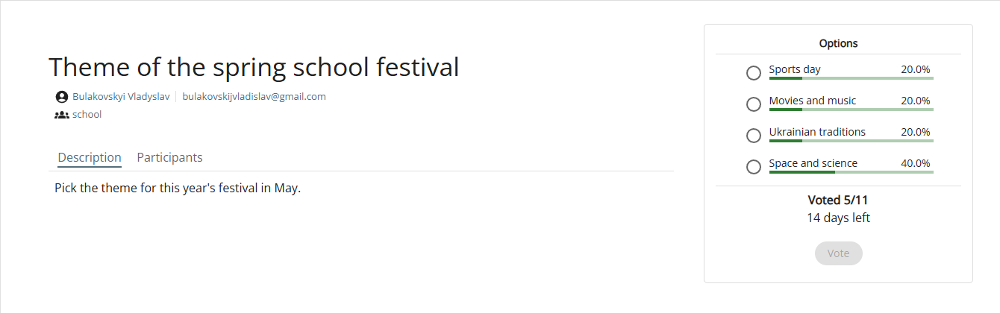

Messenger
Чати в реальному часі з контактами й реєстрацією через email. Я написав більшу частину бекенду: JWT-автентифікацію і повідомлення через WebSocket. 2 місце, 2024.
Java full-stack розробник, працюю зі Spring Boot і React. Привів команду CoffeeProgrammers до 1 місця у 2025 і 2 місця у 2024 на Всеукраїнському командному турнірі з програмування.
Студент Київської школи економіки (Computer Software Engineering), шукаю стажування з Java або full-stack.
Мій соло-проєкт Deadliner, п’ять full-stack застосунків, які ми з командою зробили для турніру, і сайт мого ліцею. У кожному командному проєкті я планував роботу, проєктував базу даних і рев’ював код.
Telegram-бот і вебдашборд, які нагадують студентам KSE про дедлайни в Moodle. Один раз вставляєш посилання на календар Moodle, і бот нагадує за 3 дні, 1 день і 3 години до кожного дедлайну.

Офіційний сайт ліцею, де я навчався 11 років: 27 сторінок українською та англійською, а також адмінпанель, де працівники редагують усе без коду. Я зробив близько 90% сайту.
Платформа для проведення турніру з програмування SFL 2026: команди, тури, завдання до кожного туру, оцінювання журі, таблиця лідерів і PDF-сертифікати.
Платформа, де учні створюють петиції, а вчителі, батьки й директор проводять шкільні голосування. Петиція з підтримкою 50% іде директору на рішення.

Спільний календар для школи: події, пов’язані з ними завдання, запрошення і сповіщення для учнів, учителів і батьків.
Чати в реальному часі з контактами й реєстрацією через email. Я написав більшу частину бекенду: JWT-автентифікацію і повідомлення через WebSocket. 2 місце, 2024.
Оцінки, предмети, розклад уроків і шкільні новини. Наш перший командний проєкт. 2 місце, 2024.
Університетський командний проєкт: ранжує країни за тим, наскільки вони близькі до твого ідеального профілю, на даних Світового банку. Я написав близько 70% коду. Python і Streamlit.
Навчальний сайт, який я зробив для свого курсу: конспект, 76 задач і пробні контрольні з таймером.
Мені подобається перетворювати ідею команди на робочий продукт. Найбільше я навчився, коли планував, розподіляв роботу і встигав здати до дедлайну.
Java, Spring Boot, Spring Security, Spring Data JPA, PostgreSQL, Flyway, React, TypeScript, Next.js, Prisma, MUI, Docker, Keycloak, JUnit, Git
Член журі IT-програм Star for Life Ukraine. Мови: українська, англійська, польська (A2).